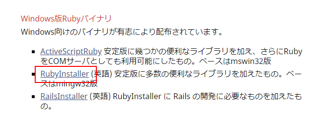

Rubyのダウンロードとインストール
Rubyのダウンロード及びインストール方法を解説します。今回はWindows10(64bit)環境へインストールを行います。2018年10月現在の最新バージョンはRuby 2.5.1です。
Ruby 2.5.1をダウンロードする
最初にRubyのダウンロードを行います。下記のURLへアクセスして下さい。
・https://www.ruby-lang.org/ja/

画面上部のメニューにある「ダウンロード」をクリックして下さい。
ダウンロードのためのページが表示されます。
Windows環境にRubyをインストールする場合にはRubyInstallerを使うと便利です。「Windows版Rubyバイナリ」のブロックまでスクロールしてから「RubyInstaller」をクリックしてください。

RubyInstallerのサイトが表示されます。画面上部に表示されている「Download」をクリックして下さい。
RubyInstallerをダウンロードするためのページが表示されます。
DEVKITありのものとなしのものがあります。DEVKITはC言語で記述された拡張ライブラリをインストールするときに必要となるものです。Railsを利用する予定があるならDEVKIT付きのものをインストールしておいてください。今回は一覧の中から「Ruby+Devkit 2.5.1-2 (x64)」をクリックしました。
Rubyのダウンロードが開始されます。任意の場所へ保存してください。ダウンロードはこれで完了です。
Ruby 2.5.1をインストールする
続いてインストールを行います。ダウンロードしたファイルをダブルクリックして起動してください。最初にライセンスが表示されます。よく読んで頂き、同意できる場合には「I accept the License」をチェックして下さい。その後で「Next」をクリックして下さい。
Rubyのインストール場所の指定とオプションの設定画面が表示されます。
「Add Ruby exexutables to your PATH」にチェックをすると、PATHを自動で設定してくれます。「Associate .rb and .rbw files with this Ruby installation」にチェックすると拡張子が「.rb」と「.rbw」のファイルをRubyと関連付けします。「Use UTF-8 as default external encoding」にチェックすると出力するときの文字コードのデフォルトをUTF-8になります。
今回はインストール場所を変更し、「Add Ruby exexutables to your PATH」と「Use UTF-8 as default external encoding」にチェックしました。設定が終わりましたら「Install」をクリックしてください。
インストールするコンポーネントを選択します。今回はMSYS2もインストールするのでチェックをしたままです。「Next」をクリックしてください。インストールが開始されます。
次の画面が表示されればRubyのインストールは完了です。続いてMSYS2のインストールを行いますので「Run 'ridk install' to setup MSYS2 and development toolchain.」にチェックをしたまま「Finish」をクリックしてください。

Rubyのインストールはこれで完了です。
MSYS2をインストールする
自動的にコマンドプロンプトが起動しMSYS2のインストールが開始されます。最初に「1」を入力し、Enerキーを押してください。
次のような画面となりますので今度は「2」を入力し、Enterキーを押してください。
次のような画面となりますので今度は「3」を入力し、Enterキーを押してください。
最後にEnterキーを押してください。画面が閉じます。
MSYS2のインストールはこれで完了です。
PATHが正常に設定されているか確認する
Rubyを使って作成したプログラムを実行するには「(Rubyをインストールしたディレクトリ)\bin」ディレクトリへPATHを設定しておくと便利です。
今回インストールを行うときに「Add Ruby exexutables to your PATH」にチェックを行っていますので自動でPATHが設定されていますが、念のためにPATHが設定されているかどうか確認しておきます。コマンドプロンプトを起動してください。
「ruby -v」と入力して実行してください。次のように表示されればPATHは問題なく設定されています。
C:¥>ruby -v ruby 2.5.1p57 (2018-03-29 revision 63029) [x64-mingw32] C:¥>
-- --
Rubyのダウンロードおよびインストール方法について解説しました。
( Written by Tatsuo Ikura )

著者 / TATSUO IKURA
初心者～中級者の方を対象としたプログラミング方法や開発環境の構築の解説を行うサイトの運営を行っています。